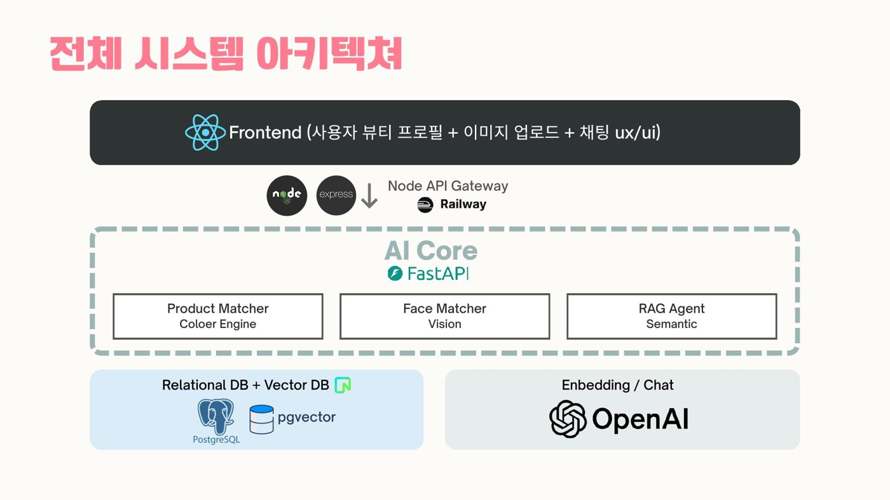

Generative AI Course Project
VIZY — K-Beauty AI Agent
An AI agent that analyzes face and product images, recommends K-beauty products that truly match the user's tone, and explains why in natural language.

Overview
Product colors look different across lighting, cameras, and filters, so online beauty recommendations often miss. VIZY matches colors in LAB space instead of relying on HEX codes or reviews, then uses a RAG-based agent to personalize recommendations and explain them.
It offers three features: Find the Look (match the makeup colors in a photo to real products), Find the Match (find similar alternatives to a product you already use), and an AI assistant that answers questions using your profile, past feedback, product data, and web search.

What I did
- Developed the React front end, including the beauty profile, image upload, recommendation results, and chat interface.
- Worked on the AI pipeline as one of two front-end and AI model developers on a three-person team.
- Extracted lip, eye, and cheek regions with face landmarks and matched colors to a 673-product database using LAB color and the ΔE2000 color difference.
- Built a RAG agent with intent classification (recommend, explain, trend), preference parsing into JSON, vector search over product and feedback embeddings (pgvector, HNSW), and rule-based re-ranking by brand, tone, finish, and keywords.
- Added web search for trend questions and a conversation memory that improves recommendations over time and can be reset by the user.
Result
- Expanded the initial plan (single ΔE color match with LLaMA 3) into a full agent combining RAG, re-ranking, web search, and personalized memory, and deployed the service.